Mixtures of GP-LVM models in MATLAB.
This page describes examples of how to use the mixture of Gaussian process latent variable model Software (MGPLVM).
The MGPLVM software can be downloaded here.
Current release is 0.12.
As well as downloading the MGPLVM software you need to obtain the toolboxes specified below.
| Toolbox | Version |
|---|---|
| [NETLAB](http://www.aston.ac.uk/eas/research/groups/ncrg/resources/netlab/ | 3.3 |
| GPMAT | 0.01 |
This release was triggered by several requests and intereactions concerning mixtures of GP-LVMs.
This was the second release and was associated with an ICML 2008 submission.
This is the first release and was associated with a 2007 NIPS Submission.
The 'oil data' is commonly used as a bench mark for visualisation algorithms. For more details on the data see this page.
We first consider the performance of the algorithm at relatively low numbers of data points, taking 100 points from the full data set.
The first example is run using demOil1001.m. It is a mixture of principal coordinate analysers (i.e. a mixture of GP-LVMs with linear kernels) using a gating network in the latent space. The model is initialised with 20 components. The results are shown in the figure below.
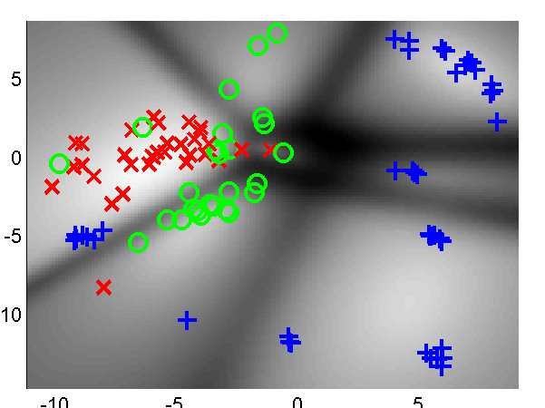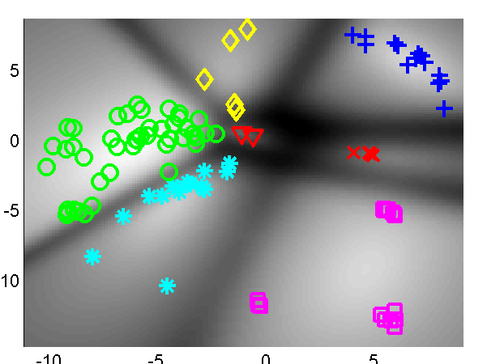
Mixtures of GP-LVM on the reduced oil data using *Left: linear kernels (Principal Coordinate Analysis, demOil1001) and Right: the assignments of the points to clusters.*
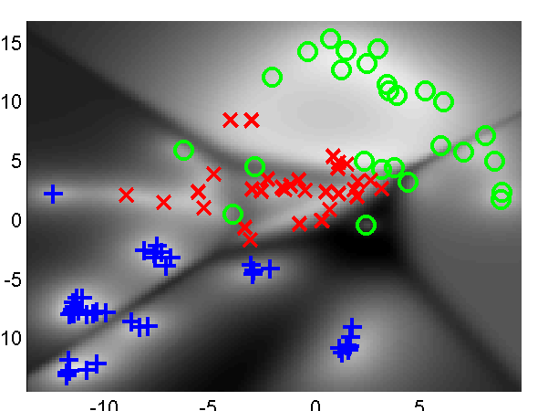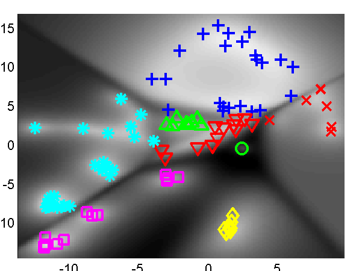
Mixtures of GP-LVM on the reduced oil data using *Left: linear kernels (Principal Coordinate Analysis, demOil1001) and Right: the RBF kernel (demOil1002).*
The second example replaces the linear kernels with radial basis function kernels. This can be run using demOil1002.m.
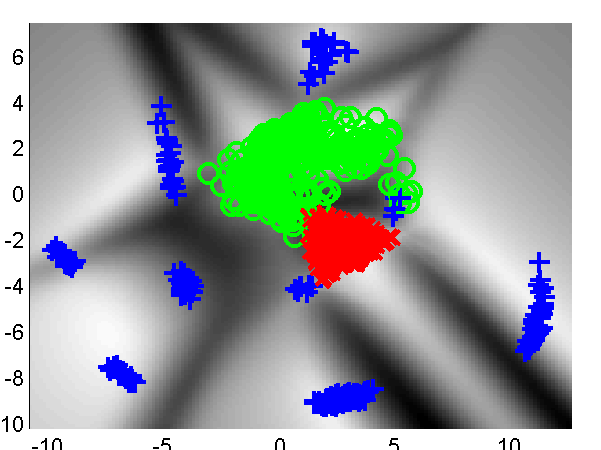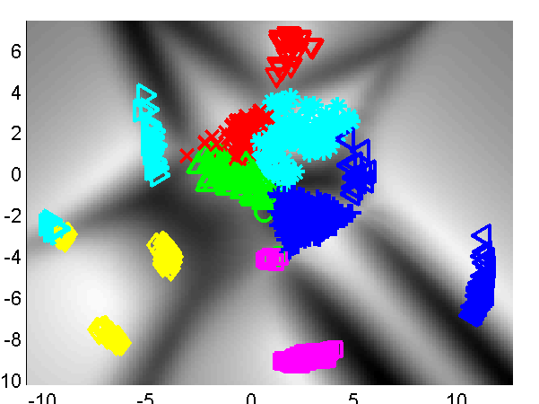
Mixtures of GP-LVM on the full oil data using *Left: linear kernels (Principal Coordinate Analysis, demOil1) (10 initial components) and Right the assignment of points to components.*
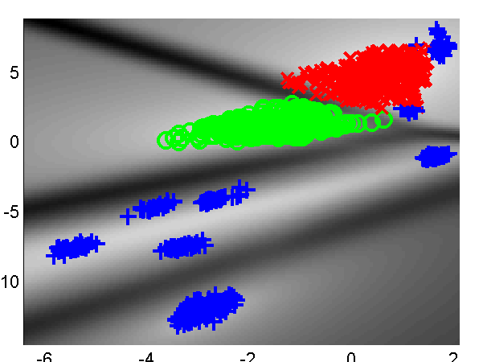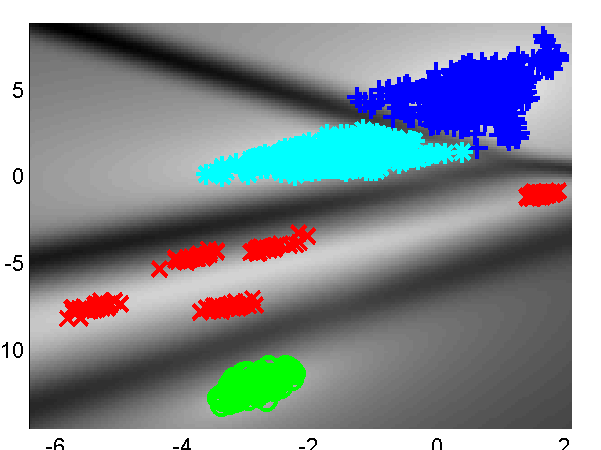
Mixtures of GP-LVM on the full oil data using *Left: linear kernels (Principal Coordinate Analysis, demOil2) (20 initial components) and Right the assignment of points to components.*
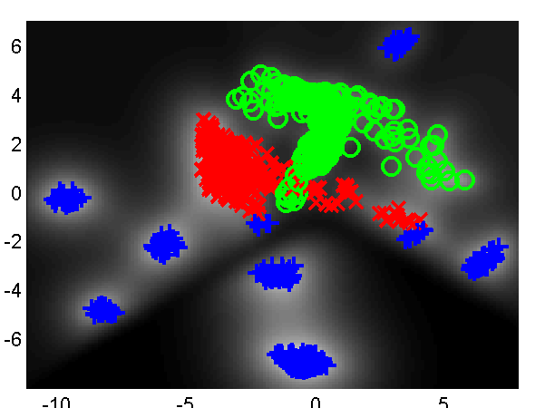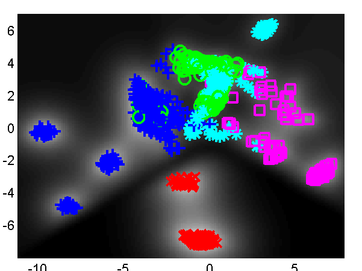
Mixtures of GP-LVM on the full oil data using *Left: RBF kernels, demOil3) (5 initial components) and Right the assignment of points to components.*
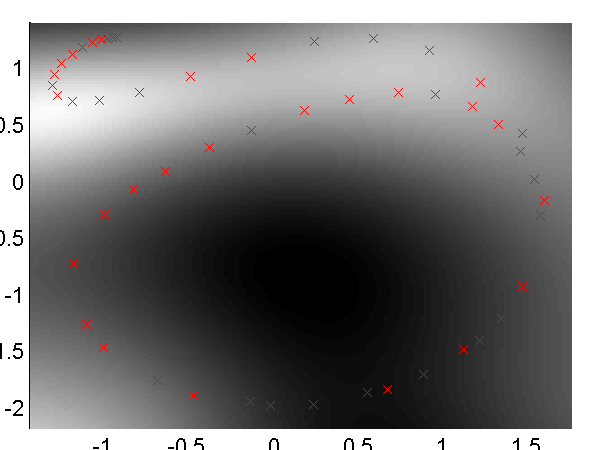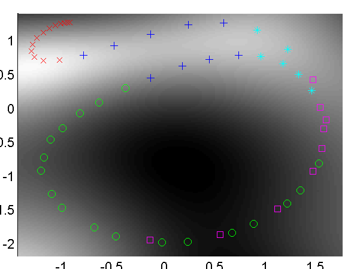
Mixtures of GP-LVM on the full oil data using *Left: linear kernels (Principal Coordinate Analysis, demStick1) (10 initial components) and Right the assignment of points to components.*
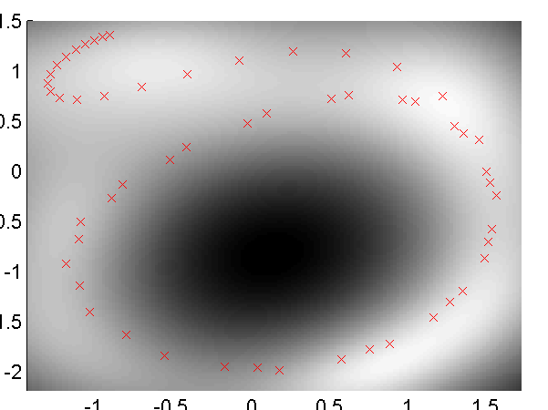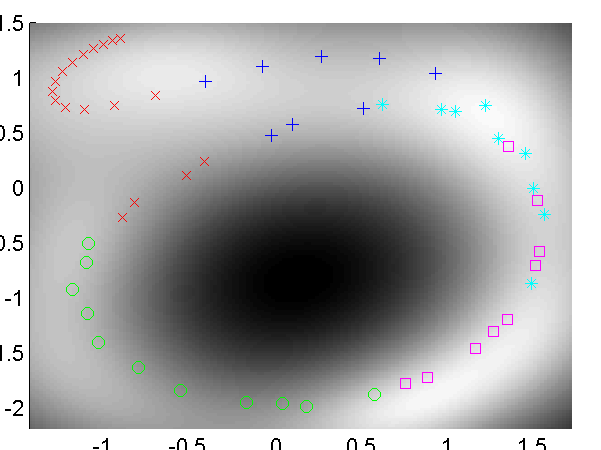
demStick2) (20 initial components) and Right the assignment of points to components.*Page updated on Tue Mar 19 11:40:37 2013